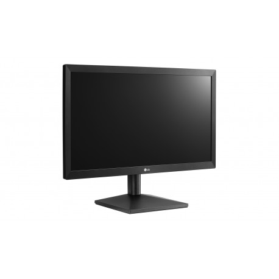
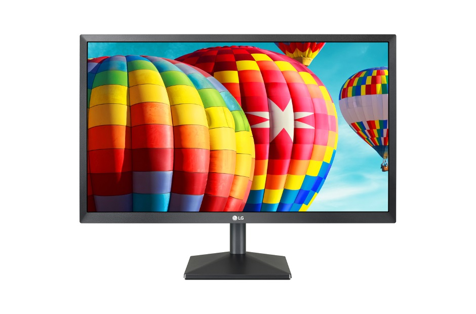
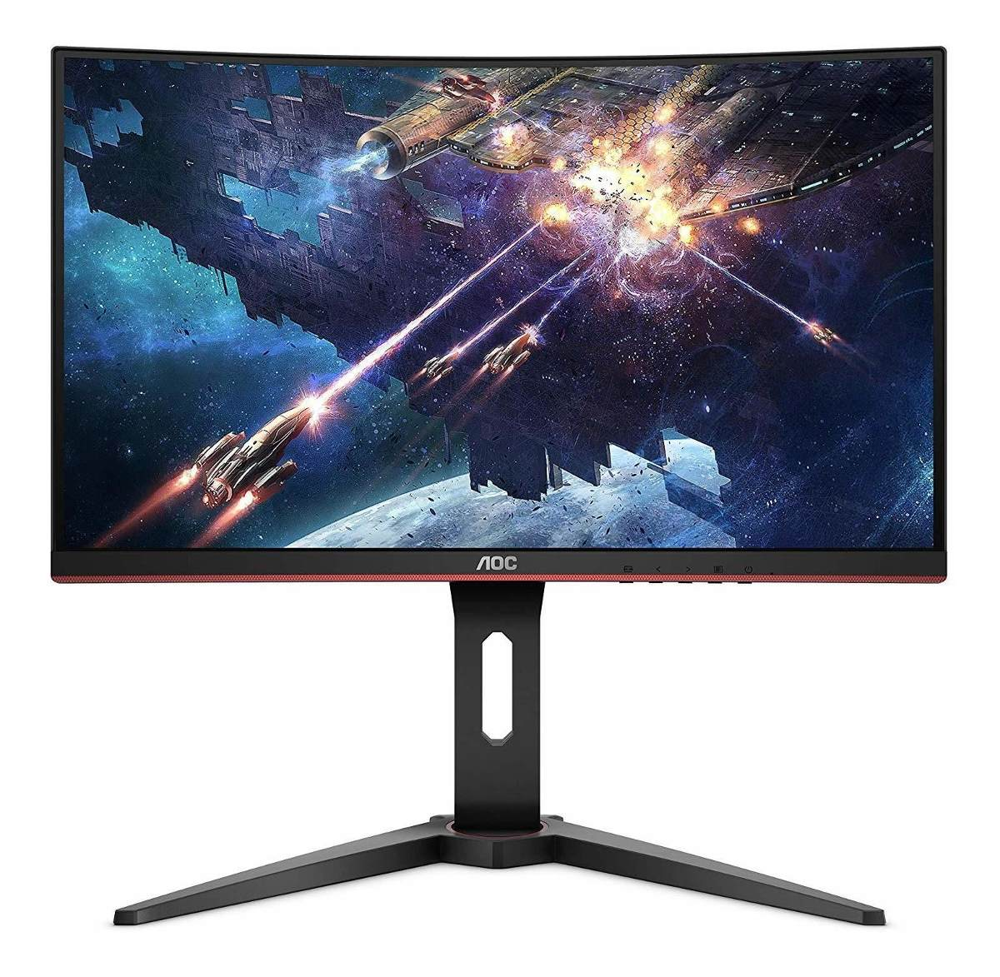
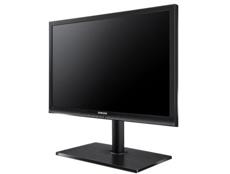

Resumen
Los monitores TFT se basan en la tecnología de transistores de películas finas (Thin-film transistor).
Estos son un tipo especial de transistores de efecto campo, que se fabrican mediante finas películas de
algún semiconductor activo, además de una capa de material dieléctrico y contactos metálicos sobre un sustrato de soporte.
Uno de los sustratos más comunes para su fabricación es el vidrio.
Tipos de paneles
Dentro de los monitores TFT podemos encontrar varios tipos de paneles:

Panel TN
- Más común
- Bajo coste
- Tiempos de respuesta bajos y alta frecuencia de actualización
- Perfecto para Gaming

Panel IPS
- Desarrollado por Hitachi en 1996
- Mejores ángulos de visión
- Colores más vivos
- Tiempos de respuesta más altos que los TN
- Perfecto para trabajos multimedia/ofimática

Panel VA
- Desarrollado por Fujitsu en 1998
- Híbrido entre el panel TN y el IPS
- Colores buenos con tiempos de respuesta bajos
- Perfecto para multimedia/ofimática y Gaming

Panel PLS
- Desarrollado por Samsung
- Ángulos de visión totales
- Mejora respecto al panel IPS
- No es tan común